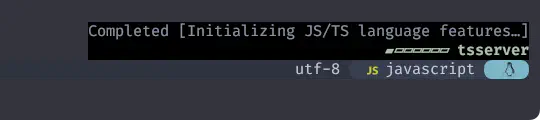
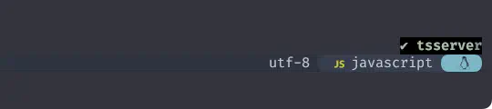

fidget.nvim
大変だ〜❗夏休みが終わってしまうぅぅ😭
前回の "London, Abbey Road" から「あっ❗」てな間に 1ヶ月半くらい経っているので、「そらそやわー。」てな感じですね😅
そんなこんなな中、"東京, 高円寺道路" に行ってみたら 💃 阿波おど 1 ってて POWER 漲ってました⭐ 🕺
一かけ 二かけ 三かけて
四 (し) かけた踊りは止められぬ
五かけ 六かけ 七かけて
八 (や) っぱり踊りは止められぬ
ロードマップは一旦置いといて、fidget.nvimからリスタートを切りましょう😉
Standalone UI for nvim-lsp progress. Eye candy for the impatient.
nvim-lspの進捗を確認するためのスタンドアロンUIです。せっかちな人のための目の保養に。
一 : Why?
The goals of this plugin are:
- to provide a UI for nvim-lsp's progress handler.
- to be easy to configure
- to stay out of the way of other plugins (in particular status lines)
このプラグインの目標は、以下の通りです：
- nvim-lsp のプログレス)ハンドラのUIを提供すること。
- 簡単に設定できるようにする
- 他のプラグイン（特にステータスライン）の邪魔にならないようにする。
The language server protocol (LSP) defines an endpoint for servers to report their progress while performing work. This endpoint is supported by Neovim's builtin LSP client, but only a handful of plugins (that I'm aware of) make use of this feature. Those that do typically report progress in the status line, where space is at a premium and the layout is not well-suited to display the progress of concurrent tasks coming from multiple LSP servers. This approach also made status line configuration more complicated.
言語サーバープロトコル（LSP）は、サーバーが作業中に進捗状況を報告するための エンドポイントを定義しています。 このエンドポイントはNeovimの内蔵LSPクライアントでサポートされていますが、 この機能を利用するプラグインは（私が知る限りでは）ほんの一握りです。 そのようなプラグインは通常、ステータス・ラインに進捗状況を表示しますが、スペースが限られているため、 複数のLSPサーバーから同時に送られてくるタスクの進捗状況を表示するには、レイアウトが適していません。 また、この方法はステータスラインの設定をより複雑にしていました。
I wanted be able to see the progress reported by LSP servers without involving the status line. Who doesn't love a little bit of eye candy?
私は、ステータスラインを介さずにLSPサーバーから報告される進捗を確認できるようにしたかったのです。 ちょっと目を惹くものが嫌いな人はいないでしょう?
セットアップはお手軽なのに見た目が超面白いのでおすすめです❗
ただ、"この機能を利用するプラグインは（私が知る限りでは）ほんの一握りです。"とあるように、
人によっては普段使用するLSPではfidget.nvimの能力を発揮できない可能性もあります。
(唐突な登場ですが) null-ls.nvim
2
と併用すると、Linterの進捗も可視化してくれるのが便利なんですよね〜😽
二 : Requirements
Having a working nvim-lsp setup is not technically necessary to setup the plugin, but it won't do anything without a source of progress notifications. For an up-to-date list of LSP servers this plugin is known to work with, see this pinned issue.
nvim-lsp が動作していることは、技術的にはプラグインをセットアップするのに必要ではありませんが、 進行状況を通知するソースがなければ何もすることができません。 このプラグインが動作することが確認されているLSPサーバーの最新リストについては、 このピン留めされた問題を参照してください。
この辺はもう大丈夫でしょう❗
三 : Config
そんで、この辺ももう大丈夫でしょう❓
四 : Options
全てのカスタマイズ項目は以下で説明されています。
The following table shows the default options for this plugin:
めっちゃある❗
五 : Spinners
めっちゃありますが、わたしはspinnerだけ変えてます😆
See <lua/fidget/spinners.lua> of this plugin's source code to see how each animation is defined.
各アニメーションがどのように定義されているかは、このプラグインのソースコードの <lua/fidget/spinners.lua> を参照してください。
お好みで選びましょう❗
わたしはmeterがお気に入りです☺️
六 : Setup
これももういつも通りなんですが一点だけ、「legacyブランチに固定しておいてね。」とのことです。(2023/08/28 現在)
NOTE: fidget.nvim will soon be completely rewritten. In the meantime, these instructions will pin your configuration to the legacy branch to avoid breaking changes.
注意: fidget.nvimは間もなく完全に書き直される予定です。 それまでの間レガシーブランチに固定し、あなたの設定を壊さないようにします。
固定しておきましょう😉
use {
'j-hui/fidget.nvim',
tag = 'legacy',
config = function() require 'extensions.fidget' end,
requires = 'neovim/nvim-lspconfig',
}
七 : Try!
例えばtypescript-language-serverが動く環境でjsファイルを開けば...、

ここにパワーが溜まってきただろう❗❗ 
八 : やっぱり踊りは止められぬ
1: 阿波踊り（あわおどり）は、阿波国（現・徳島県）を発祥とする盆踊り。 高知のよさこい祭りと愛媛の新居浜太鼓祭りと並ぶ四国三大祭りであり、日本三大盆踊りの一つとしても知られる。 Wikipediaより
2: null-ls.nvim: 残念ながら、この夏休みの間に開発終了(IMPORTANT: Archiving null-ls) になっちゃったみたい...。Thank you for your hard work❗
3: 一応書いとくけど「冗談だぞ❗」...ん❓ っていうか、むしろこっちに請求書きちゃう❓😨